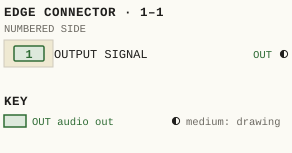
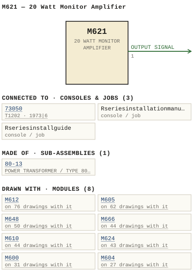

M621 — 20 Watt Monitor Amplifier
| Type | module |
| Category | AMPLIFIERS |
| Try it | simulator & front panel · download package (zip) |
| Earliest dated evidence | 1970|3 — title-block date |
| Evidence | "DATE 27 july 70" in PUBLIC/Manuals + tech DOCUMENTS/Modules/M621 vint/173-06-001.jpg |
| Confidence | high |
| All years found | 1970|3, 1973|6 |
| Used in jobs | 73050 (1973|6), Rseriesinstallationmanual, Rseriesinstallguide |
| Folder | DOCUMENTS/Done/Done - L2042 Console |
| Folder | DOCUMENTS/Done/Done - L3242 Console |
| Folder | DOCUMENTS/Internal and Eng Notes and drawings/Quotations brochures and misc papers |
Connections and circuit (ideal SPICE model)
Inputs, outputs, power and control as its own documents name them (no RTO-144 sheet for it: pin numbers only where the page gives them). Run the generator, turn the gain, watch the VU.
Pictures


M621.pinout.svg

M621.connections.svg 1970 - M621 - B 173-06-001 - M621 - 20W MONITOR AMPLIFIER - P.C.B. LAYOUT (2).jpg
1970 - M621 - B 173-06-001 - M621 - 20W MONITOR AMPLIFIER - P.C.B. LAYOUT (2).jpg 1973 - 621-02-003 - 20 WATT MONITOR AMPLIFIER - DRN DPS - ISS 3 (2).jpg
1973 - 621-02-003 - 20 WATT MONITOR AMPLIFIER - DRN DPS - ISS 3 (2).jpg 1973 - M621 - 173-02-001 - OHMS CAPAC ITOR VALUES SIGNATIONS.jpg
1973 - M621 - 173-02-001 - OHMS CAPAC ITOR VALUES SIGNATIONS.jpg 1973 - M621 - 173-02-001 - WATT MONITOR AMP.jpg
1973 - M621 - 173-02-001 - WATT MONITOR AMP.jpg 1973 - M621 - 621-02-003 - WATT MONITOR AMPLIFIER.jpg
1973 - M621 - 621-02-003 - WATT MONITOR AMPLIFIER.jpg 1973 - M621 - 621-02-004 - CONNECT IONS.jpg
1973 - M621 - 621-02-004 - CONNECT IONS.jpg 1973 - M621 - 621-06-002 - HEAT SINK AND FRONT PANEL SHOWN SEPARATE FOR.jpg
1973 - M621 - 621-06-002 - HEAT SINK AND FRONT PANEL SHOWN SEPARATE FOR.jpg 1973 - M621 - 621-06-002 - WATT MONITOR AMPLIFIER.jpg
1973 - M621 - 621-06-002 - WATT MONITOR AMPLIFIER.jpg 1975 - PRICE LIST - PRICE LIST.jpg
1975 - PRICE LIST - PRICE LIST.jpg 19xx - M605 - AD - wbsps - ad - 600 series.jpg
19xx - M605 - AD - wbsps - ad - 600 series.jpg 1970 - M621 - 173-02-001 (2).jpg
1970 - M621 - 173-02-001 (2).jpg 1970 - M621 - 173-02-001 (3).jpg
1970 - M621 - 173-02-001 (3).jpg 1970 - M621 - 173-02-001 - MOD ICKD USED.jpg
1970 - M621 - 173-02-001 - MOD ICKD USED.jpg 1970 - M621 - 173-02-001.jpg
1970 - M621 - 173-02-001.jpg 1970 - M621 - 173-06-001 - DIF ICIS.jpg
1970 - M621 - 173-06-001 - DIF ICIS.jpg 1970 - M621 - 621-02-001 - DOTTED FOR MINUS TZEKE.jpg
1970 - M621 - 621-02-001 - DOTTED FOR MINUS TZEKE.jpg 1970 - M621 - 621-02-002 - GAIN STRAPPING SEE NOTE.jpg
1970 - M621 - 621-02-002 - GAIN STRAPPING SEE NOTE.jpg 1970 - M621 - 621-02-002 - HIGH COMMON SIDE OUTPUT.jpg
1970 - M621 - 621-02-002 - HIGH COMMON SIDE OUTPUT.jpg 1970 - M621 - 621-02-002 - MAIN BUILDING GROUND ILSS MOD (2).jpg
1970 - M621 - 621-02-002 - MAIN BUILDING GROUND ILSS MOD (2).jpg 1970 - M621 - 621-02-002 - MAIN BUILDING GROUND ILSS MOD.jpg
1970 - M621 - 621-02-002 - MAIN BUILDING GROUND ILSS MOD.jpg 1970 - M621 - 621-02-002 - MAIN BUILDING GROUND.jpg
1970 - M621 - 621-02-002 - MAIN BUILDING GROUND.jpg 1970 - M621 - 621-02-002 - WATT MONITOR AMP.jpg
1970 - M621 - 621-02-002 - WATT MONITOR AMP.jpg 1970 - M621 - 621-02-003 (2).jpg
1970 - M621 - 621-02-003 (2).jpg 1970 - M621 - 621-02-003 - GAIN CONTROL.jpg
1970 - M621 - 621-02-003 - GAIN CONTROL.jpg 1970 - M621 - 621-02-003 - MOD ICKD USED (2).jpg
1970 - M621 - 621-02-003 - MOD ICKD USED (2).jpg 1970 - M621 - 621-02-003 - MOD ICKD USED.jpg
1970 - M621 - 621-02-003 - MOD ICKD USED.jpg 1970 - M621 - 621-02-003.jpg
1970 - M621 - 621-02-003.jpg 1970 - M621 - 621-02-004 - IFIER OUTPUT CHASSIS AMPLIFIER COMMON SIGNA.jpg
1970 - M621 - 621-02-004 - IFIER OUTPUT CHASSIS AMPLIFIER COMMON SIGNA.jpg 1970 - M621 - 621-02-004 - OUTPUT PRIMARY DIRECT OUTPUT SIGNAL GROUND CHASSIS GROUND (2).jpg
1970 - M621 - 621-02-004 - OUTPUT PRIMARY DIRECT OUTPUT SIGNAL GROUND CHASSIS GROUND (2).jpg 1970 - M621 - 621-02-004 - OUTPUT PRIMARY DIRECT OUTPUT SIGNAL GROUND CHASSIS GROUND.jpg
1970 - M621 - 621-02-004 - OUTPUT PRIMARY DIRECT OUTPUT SIGNAL GROUND CHASSIS GROUND.jpg 1970 - M621 - 621-02-004 - OUTPUT PRIVARY DIRECT OUTPUT SIGNA GROUND.jpg
1970 - M621 - 621-02-004 - OUTPUT PRIVARY DIRECT OUTPUT SIGNA GROUND.jpg 1970 - M621 - 621-06-002 - HEAT SINK.jpg
1970 - M621 - 621-06-002 - HEAT SINK.jpg 1970 - M621 - 621T - P001 - Title Page.jpg
1970 - M621 - 621T - P001 - Title Page.jpg 1970 - M621 - 621T - P002.jpg
1970 - M621 - 621T - P002.jpg 1970 - M621 - 621T - P003.jpg
1970 - M621 - 621T - P003.jpg 1970 - M621 - 621T - P004.jpg
1970 - M621 - 621T - P004.jpg 1970 - M621 - 621T - P005.jpg
1970 - M621 - 621T - P005.jpg 1970 - M621 - 621T - P006.jpg
1970 - M621 - 621T - P006.jpg 1970 - M621 - 621T - P007.jpg
1970 - M621 - 621T - P007.jpg 1970 - M621 - 621T - P008.jpg
1970 - M621 - 621T - P008.jpg 1970 - M621 - 621T - P009.jpg
1970 - M621 - 621T - P009.jpg 1970 - M621 - 621T - P010.jpg
1970 - M621 - 621T - P010.jpg 1970 - M621 - 621T - P011.jpg
1970 - M621 - 621T - P011.jpg 1970 - M621 - 621T - P012.jpg
1970 - M621 - 621T - P012.jpg 1970 - M621 - B 173-06-001 - M621 - 20W MONITOR AMPLIFIER - P.C.B. LAYOUT.jpg
1970 - M621 - B 173-06-001 - M621 - 20W MONITOR AMPLIFIER - P.C.B. LAYOUT.jpg 1970 - M621 - B 621-06-002 - M621 - 20 WATT MONITOR AMPLIFIER - COMPONENT LAYOUT.jpg
1970 - M621 - B 621-06-002 - M621 - 20 WATT MONITOR AMPLIFIER - COMPONENT LAYOUT.jpg 1970 - M621 - M621T vint p1.jpg
1970 - M621 - M621T vint p1.jpg 1970 - M621 - M621T vint p10.jpg
1970 - M621 - M621T vint p10.jpg 1970 - M621 - M621T vint p11.jpg
1970 - M621 - M621T vint p11.jpg 1970 - M621 - M621T vint p12.jpg
1970 - M621 - M621T vint p12.jpg 1970 - M621 - M621T vint p3.jpg
1970 - M621 - M621T vint p3.jpg 1970 - M621 - M621T vint p4.jpg
1970 - M621 - M621T vint p4.jpg 1970 - M621 - M621T vint p5.jpg
1970 - M621 - M621T vint p5.jpg 1970 - M621 - M621T vint p6.jpg
1970 - M621 - M621T vint p6.jpg 1970 - M621 - M621T vint p7.jpg
1970 - M621 - M621T vint p7.jpg 1970 - M621 - M621T vint p8.jpg
1970 - M621 - M621T vint p8.jpg 1970 - M621 - M621T vint p9.jpg
1970 - M621 - M621T vint p9.jpg 1970 - M621 - MODEL M621-M621T 20W MONITOR AMPLIFIER INSTRUCTION MANUAL.jpg
1970 - M621 - MODEL M621-M621T 20W MONITOR AMPLIFIER INSTRUCTION MANUAL.jpg 1970 - M621 - wbsps - module - m621 monitor amp - 001.jpg
1970 - M621 - wbsps - module - m621 monitor amp - 001.jpg 1970 - M621 - wbsps - module - m621 monitor amp - 002.jpg
1970 - M621 - wbsps - module - m621 monitor amp - 002.jpg 1970 - M621 - wbsps - module - m621 power amplifier (2).jpg
1970 - M621 - wbsps - module - m621 power amplifier (2).jpg 1970 - M621 - wbsps - module - m621 power amplifier.jpg
1970 - M621 - wbsps - module - m621 power amplifier.jpg 1970 - M621 - wbsps - module - m621 power amplifier_small.jpg
1970 - M621 - wbsps - module - m621 power amplifier_small.jpg 1970 - M621 - wbsps - promo - m621 monitor amp - 001.jpg
1970 - M621 - wbsps - promo - m621 monitor amp - 001.jpg 1970 - M621 - wbsps - promo - m621 monitor amp - 001_small.jpg
1970 - M621 - wbsps - promo - m621 monitor amp - 001_small.jpg 1970 - M621 - wbsps - promo - m621 monitor amp - 002.jpg
1970 - M621 - wbsps - promo - m621 monitor amp - 002.jpg 1970 - M621 - wbsps - promo - m621 monitor amp - 002_small.jpg
1970 - M621 - wbsps - promo - m621 monitor amp - 002_small.jpg 1970 - M621 - wbsps - promo - m621 monitor amp - 003.jpg
1970 - M621 - wbsps - promo - m621 monitor amp - 003.jpg 1970 - M621 - wbsps - promo - m621 monitor amp - 004.jpg
1970 - M621 - wbsps - promo - m621 monitor amp - 004.jpg 1973 - 621-02-003 - 20 WATT MONITOR AMPLIFIER - DRN DPS - ISS 3.jpg
1973 - 621-02-003 - 20 WATT MONITOR AMPLIFIER - DRN DPS - ISS 3.jpg 19xx - DOC - L2042 - P05.jpg
19xx - DOC - L2042 - P05.jpg 19xx - DOC - L3242 - P05.jpg
19xx - DOC - L3242 - P05.jpg 19xx - DOC - US Sales Brochure pg 11.jpg
19xx - DOC - US Sales Brochure pg 11.jpg 19xx - DOC - US Sales Brochure pg 2.jpg
19xx - DOC - US Sales Brochure pg 2.jpg 19xx - DOC - US Sales Brochure pg 3.jpg
19xx - DOC - US Sales Brochure pg 3.jpg 19xx - DOC - wbsps - ad - 600 series.jpg
19xx - DOC - wbsps - ad - 600 series.jpg 19xx - M621 - M621 (2).jpg
19xx - M621 - M621 (2).jpg 19xx - M621 - M621.jpg
19xx - M621 - M621.jpg wbsps - promo - m621 monitor amp - 002.jpg
wbsps - promo - m621 monitor amp - 002.jpg 1973 - 73050 - 0002.jpeg
1973 - 73050 - 0002.jpeg 1990 - R series installation ma - 77024-02-009 - ASSEMBLIES FOR ANY OUTWARD PHYSICAL DAMAGES PARTICULARLY THE.jpg
1990 - R series installation ma - 77024-02-009 - ASSEMBLIES FOR ANY OUTWARD PHYSICAL DAMAGES PARTICULARLY THE.jpg 1973 - 621-06-002 - 20 WATT MONITOR AMPLIFIER COMPONENT LAYOUT - ISS 2.jpg
1973 - 621-06-002 - 20 WATT MONITOR AMPLIFIER COMPONENT LAYOUT - ISS 2.jpg 19xx - M621 - Model M621 M621T 20W Monitor Amplifier Instruction Manual.jpg
19xx - M621 - Model M621 M621T 20W Monitor Amplifier Instruction Manual.jpg wbsps - module - m621 monitor amp - 002.jpg
wbsps - module - m621 monitor amp - 002.jpgPinout & connections
Each contact as its own documents name it: 1 named (1 medium confidence). An empty slot is a contact no page names. Hover a contact for its source; the table under the drawing lists them.
pinout (SVG) · connections (SVG) · pins (JSON)
Pin evidence — 1 contacts
| Pin | Signal | Kind | Confidence | Read from | Source |
|---|---|---|---|---|---|
| 1 | OUTPUT SIGNAL | audio out | medium | prose | 1970 - M621 - M621T vint p4.jpg, p. 1 “The output signal is taken from the junction of R60 and R61 and routed via Ll to the module connector Pl pin 1 The feedback loop for the ou…” |
Dates found in the documents


Physical manual inventory
| Item | Location | Status | Scanned |
|---|---|---|---|
| M621-621T - 20W Monitor Amp | DUPLICATE | SCANNED BUT NEEDS STICHING | |
| M621-621T - 20W Monitor Amp | PDF - Already scanned | ||
| M621+621T - 20W Monitor Amp | Recently scanned and stiched by WB |
Ads & brochures
- 19xx - M605 - AD - wbsps - ad - 600 series.jpg
- 19xx - M610 - AD - wbsps - ad - 600 series.jpg
- 19xx - M612 - AD - wbsps - ad - 600 series.jpg
- 19xx - M621 - AD - wbsps - ad - 600 series.jpg
- 19xx - M666 - AD - wbsps - ad - 600 series.jpg
- 19xx - M624 - AD - wbsps - ad - 600 series.jpg
- 19xx - M648 - AD - wbsps - ad - 600 series.jpg


Documents (2)
| Year | File | |
|---|---|---|
| 1973|6 | 1973 - M621 - 621T - 20W Monitor Amp (2).pdf | note |
| 1973|6 | 1973 - M621 - 621T - 20W Monitor Amp.pdf | note |
Photos & scans (140)


Sub-assemblies & parts used (1)
| Item | What | Family | Year | How we know |
|---|---|---|---|---|
| 80-13 | POWER TRANSFORMER / TYPE 80-13 | Power transformers (80-n) | 1969|2 | named in its manual |
Consoles & jobs it is connected to (3)
Their own drawings name this module.
| Job | Year | Drawing | Page |
|---|---|---|---|
| 73050 | 1973|6 | 1973 - 73050 - 0002.jpeg | 1 |
| Rseriesinstallationmanual | 1990 - R series installation ma - 77024-02-009 - ASSEMBLIES FOR ANY OUTWARD PHYSICAL DAMAGES PARTICULARLY THE.jpg | 1 | |
| Rseriesinstallguide | 1990 - R series install guide - 77024-02-009 - ASSEMBLIES FOR ANY OUTWARD PHYSICAL DAMAGES PARTICULARLY THE.jpg | 1 |

Named in other drawings & documents (3)
| File | Page |
|---|---|
| 1995 - M405P - ITEMIMP(1).TXT (2).docx | 1 |
| 1995 - M405P - ITEMIMP(1).TXT.docx | 1 |
| 1995 - M405P - ITEMIMP.TXT.docx | 1 |
From the manuals
Each manual split into its sections. Text that is the same in many Ward-Beck manuals (warranty, address, standard notes) is kept once on the Boilerplate page and linked.
General description (2)
Description — 313 words · 1970 - M621 - wbsps - promo - m621 monitor amp - 001.jpg, page 1
The M621 20 watt audio power amplifier is an ac operated, plug-in module designed for professional applications in the broadcast_ motion picture and sound recording industries The unit represents the continuing development and expansion of the well proven WBS 600 series of 3-1/2 inch modular components and offers a wider scope of selection for monitor amplifiers from this design category.
The circuit utilizes differential operational amplifiers to produce an ultra-reliable transformerless design capable of developing a minimum of 20 watts rms to drive an 8 ohm loudspeaker directly. Other load impedances (4, 16 ohms, etc ) may be accommodated with appro- priate power output interpolation. A unique protection circuit incorporated within the M621 activates instantaneously during adverse amplifier load conditions or at a pre- determined power output level.
The amplifier does not sustain damage even when deliberately shorted at full power output. combination of conditional frame strapping and a variable front panel level control permits the M621 to operate over an input signal range of 20dBm to 18dBm The M621 presents a permanent 20k ohm impedance at the input and is capable of operating from a balanced or unbalanced source.
The unit exhibits exceedingly uniform frequency response with Iow noise and distortion over the frequency range 3OHz to 20kHz. An internal muting relay is included to provide amplifier cut-off when an external (closure to ground) command is initiated via muting logic control circuitry, etc. The modest size of 5.1W x 3.4H x 13.70 inches allows three M621 monitor amplifiers t0 be accommodated in one standard rack mount- ing (19W x 3.5H) MF6 equipment frame.
FEATURES 2Ow rms direct output into 8 ohms Compact design mounts in standard WBS 3-1/2 inch MF6 rack frame. Self contained power supply Integral muting relay Operational amplifier transformerless 1C design with unique short-circuit protection 20k bridging input balanced/unbalanced Active elements contained on plug-in subsidiary PC card WBS M621
- source: 1970 - M621 - wbsps - promo - m621 monitor amp - 001.jpg, p. 1
Description — 314 words · 19xx - M621 - DOC - US Sales Brochure pg 2.jpg, page 1
The M621 20 watt audio power amplifier is an ac operated, plug-in module designed for professional applications in the broadcast, motion picture and sound recording industries: The unit represents the continuing development ad expansion of the well proven WBS 600 series of 3-1/2 inch modular components and offers a wider scope of selection for monitor amplifiers from this design category.
The circuit utilizes differential operational amplifiers to produce a ultra-reliable transformerless design capable of developing a minimum of 20 watts rms to drive a 8 ohm loudspeaker directly. Other load impedances (4, 16 ohms, etc ) may be accommodated with appro- priate power output interpolation. A unique protection circuit incorporated within the M621 activates instantaneously during adverse amplifier load conditions or at a pre- determined power output level.
The amplifier does not sustain damage even when deliberately shorted at full power output. A combination of conditional frame strapping ad a variable front panel level control permits the M621 t0 operate over an input signal range of ~20dBm to 18dBm: The M621 presents a permanent 20k ohm impedance at the input ad is capable of operating from a balanced or unbalanced source.
The unit exhibits exceedingly uniform frequency response with low noise ad distortion over the frequency range 30Hz to Z0kHZ An internal muting relay is included to provide amplifier cut-off when a external (closure to ground) command is initiated via muting logic control circuitry, etc. The modest size of 5.1W x 3.4H x 13.70 inches allows three M621 monitor amplifiers to be accommodated in one standard rack mount- ing (19W x 3.5H) MF6 equipment frame: FEATURES 2Ow rms direct output into 8 ohms Compact design mounts in standard WBS 3-1/2 inch MF6 rack frame.
Self contained power supply Integral muting relay Operational amplifier transformerless 1C design with unique short-circuit protection 20k bridging input balanced /unbalanced Active elements contained on plug-in subsidiary PC card 22488
- source: 19xx - M621 - DOC - US Sales Brochure pg 2.jpg, p. 1
Specifications (9)
Technical Data — 973 words · 1973 - M621 - 621T - 20W Monitor Amp (2).pdf, page 5
4 3 or 63 dB matched gain (condi tional frame strap) . Front pane l variable co ntrol.
FREQUENCY RESPONSE : ±.0 .25 dB from 20 Hz to 20 kHZ
80 dB below 20 W
'l'QTAL HARMONI C DIS'l'QRTION: l e s s than 0 .25% from 20 Hz to 20 kHZ mea s u r e d at 20 W output l ev e l .
- 20 dBtn nomina l, 0 dam maximum (6 3 d B gll.in ) o dam nom i na l , +18 dBll'l maximum ( 4 3 dB ga in) LONGITtlOINA L BAlANCE: greater than 60 dB
SOURCE IMPEDANCE: 600 Ohms or less , balanced or u nba lanced
INPUT IMPEDANCE: 20 kOhms
LOAD IMPEDANCE: 8 Ohms nominal . 4 or 16 Oh1ll$ wi th appropriate power output correction .
OUTPUT IMPEDANCE: leas than 0 . 5 Ohms
the low termina l number of the i nput pair is i n phase with the di rect output t e rmi n a l.
POWER REQUIREMENTS : 11 5 VAC, 60 HZ, 60 VA
AMBI ENT TEMPERATURE:
DIMENSI ONS: 5 . 1w x 3 . 4H x 13 .7D i nches
6 I b s ne t a .c ps BS W :// tp ht
Model H6Z1·T ZOW Monit or AlIl p l if ie r
TECHNICAL OATA:
GAIN: 42 Dr 62 lIa t c he d ga in (c on diti on al ) ga tn st ra p ). Fr ont pan e l va r h bh! c ontro l. FREQUENCY RESPONSE: Wit h ln I dB 30 Hz to 15kHz . NOISE: 80 dB b elow ZOW. TOTAL HARMONIC DISTORTION: Less tha n O.ZSI fr oll 50Hz t o 20Hz lIe n ur e d a t 20W ou tpu t t evet . INPUT LEVEL: - 20 dBIl no. i na 1 0 dh lIax. (6ZcIl gain) OdS. nOll t nal +18 dBIl Mn. ( 4ZdBgain) LONGITUDINA L BALANCE: Gr ute r t han 60dB. SOURCE I MPEOENe E: 60 0 oh lls Dr le ss . ba la nce d or unb a la n c ed. INPUT IMPEDENC E: 20 1: 0tll1S.
LOAD I MPEDENCE: 4 ,8,1 6 , I SO, or 600 01111$ ( co nd it lo na l tran s for ller s t ra ppi ng) OUTPUT (JIIIPEDENCE: Le ss th an 1/5 lo a d IIl pedence. PHASI NG: The l ow t e ,.,l1na 1 n Ullber o f t ile i npu t pai r is in ph ase with the l ow te r llina1 nUMber o f tile output tran sfo r ller strappi ng con fi gurati on . POWER REQUIREMENT S: llSV ac 60VA. AMBIENT TEMPERATURE: 00 to 60°C. DIMENSIONS : S . l W x 3 .4H x 13 .70 in c he s . a .c
WE IGHT: 6 1bs . ne t . ps BS W :// tp ht
Model M621/M62 1T 2 0W Monitor Amplifie r
AMPLIFIER AOOUS1'MEm'S
1. Longi t uC!i na l Ba lance AC!1u e t men t
Suap t he aillpl itier t o r low gain a nd. a pp ly a signal. Ad j ust the input a i qnal level f or a c on venie nt ou t pu t le vel. Th is ou t pu t l e v e l wi ll be the r eference le~l f or the fol l o.rinq adju.ebDen t a .
Tie pins 8 . nC! 16 on the flIOdule c onnector P2 t ogether a nd apply the same s ignal volta ge between t his junction and g round . Th e i n pu t s igna l is nOW' longitud i n ally applie d.
Adj us t R18 • 2 00 Hz f o r mi n im.ua output . Th e output s hou l d be better than 6 0 dB down .
i- Strap the alllpHf i er t or high 9ain a nd r e Cluce the input l ev el by 2 0 dB. Ad jus t R13 for mn imum ou t pu t a t 200 Hz .
Repeat both s te pe a t least tw ice, s i nce there is some interaction between the contro ls .
With the amplifie r strapped for high 9ain , change t h e input frequency t o 1 0 :kHz and adj us t e ll for mi n illlU18 output .
The adjustments ahou ld res u lt in an ov er-a ll common moile re j e ction of 60 dB or greater from 6 0 Hz to 6 ltHJl: .
a .c ps BS W :// tp ht
Mod el M621 /M62lT 20 W Mo ni tor Amplifi er
DC VOLT1>.GE CHART
The fol lowing DC vo ltages a re typic a l and may va ry +l ~ . The idle cur r en t should be between 35 and 4 5 IlIA. At 20 wat ts output the c ur rent drain should be I A. This can be convenient ly measu red by r ectOVi ng fuses Fl and F2. The vo ltmeter us e d f or the mlllllsurementl . should have III stnuitivity of 20 .000 Ohma pe r vol t .
I ntegrated circuits .
Pi ns
Z1
- source: 1973 - M621 - 621T - 20W Monitor Amp (2).pdf, p. 5
Technical Data — 206 words · 19xx - M621 - M621 (2).jpg, page 1
GAIN: 43 or 63dB matched gain (conditional frame strap) Front panel variable control. FREQUENCY RESPONSE: +0.25dB from 2OHz to 2OkHz NOISE: 8OdB below 2OW TOTAL HARMONIC DISTORTION: Less than 0.25% from 2OHz to 20kHz (measured at 2OW output level)_ INPUT IMPEDANCE: 20k ohms LOAD IMPEDANCE: 8 ohms nominal, 4 or 16 ohms with appropriate power out- put correction. OUTPUT IMPEDANCE: Less than 0.5 ohms PHASING: The low terminal number of the input pair is in phase with the direct output terminal.
POWER REQUIREMENTS: 115V ac, 6OHz, 6OVA AMBIENT TEMPERATURE: 00 to 6OOC DIMENSIONS: 5.1W x 3.4H x 13.7D0 inches WEIGHT: 6 Ibs net_ INPUT LEVEL: ~2OdBm nominal , OdBm maximum (63dB gain) OdBm nominal , +1 8dBm maximum (43dB gain) LONGITUDINAL BALANCE: Greater than 6OdB SOURCE IMPEDANCE: 600 ohms or less balanced or unbalanced ACCESSORIES: MF6-600 Series Mounting Frame 19W 3.5H x 14.5D (less rear cable tray and cover) Standard EIA rack mounting: Accom- modates three M621 modulesor any combination of single, double or quadruple units not exceeding ten single width modules MFR6-6O0 Series Frame Receptacle.
Two required per M621 _ WARD-BECK SYSTEMS LTD_ WARD-BECK SYSTEMS INC_ 841 Progress Ave,Scarborough Ont; M1H 2x4 290 Larkin St;, Buffalo; New York 14210 Telephone: (416) 438-6550 Telex: 06-23469 WBS
- source: 19xx - M621 - M621 (2).jpg, p. 1
Technical Data — 205 words · 1970 - M621 - wbsps - promo - m621 monitor amp - 002.jpg, page 1
GAIN: 43 or 63dB matched gain (conditional frame strap) Front panel variable control. FREQUENCY RESPONSE: +0.25dB from 2OHz to 20kHz NOISE: 8OdB below 2OW TOTAL HARMONIC DISTORTION: Less than 0.25% from 2OHz to 20kHz (measured at 2OW output level)_ INPUT IMPEDANCE: 20k ohms LOAD IMPEDANCE: 8 ohms nominal, 4 or 16 ohms with appropriate power out- put correction. OUTPUT IMPEDANCE: Less than 0.5 ohms PHASING: The low terminal number of the input pair is in phase with the direct output terminal.
POWER REQUIREMENTS: 115v ac, 6OHz , 6OVA AMBIENT TEMPERATURE: 00 to 6OOC DIMENSIONS: 5.1W 3.4H x 13.7D inches WEIGHT: 6 Ibs net. INPUT LEVEL: ~2OdBm nominal , OdBm maximum (63dB gain) OdBm nominal , +18dBm maximum (43dB gain) LONGITUDINAL BALANCE: Greater than 6OdB SOURCE IMPEDANCE: 600 ohms or less balanced or unbalanced ACCESSORIES: MF6-600 Series Mounting Frame 19W 3.5H x 14.5D (less rear cable tray and cover) Standard EIA rack mounting: Accom- modates three M621 modulesor any combination of single , double or quadruple units not exceeding ten single width modules MFR6-600 Series Frame Receptacle.
Two required per M621_ WARD-BECK SYSTEMS LTD_ WARD-BECK SYSTEMS INC_ 841 Progress Ave,Scarborough, Ont; M1H 2x4 290 Larkin St;, Buffalo, New York 14210 Telephone: (416) 438-6550 Telex: 06-23469 WBS
- source: 1970 - M621 - wbsps - promo - m621 monitor amp - 002.jpg, p. 1
- also in: 19xx - M621 - DOC - US Sales Brochure pg 3.jpg, p. 1 · 19xx - M621 - M621.jpg, p. 1 · 1970 - M621 - wbsps - module - m621 monitor amp - 002.jpg, p. 1 · wbsps - promo - m621 monitor amp - 002.jpg, p. 1 · 1970 - M621 - M621T vint p5.jpg, p. 1 · 1970 - M621 - 621T - P005.jpg, p. 1
Maintenance & alignment (2)
Adjustments — 162 words · 1970 - M621 - M621T vint p7.jpg, page 1
1 Longitudinal Ba lance Adjustment Strap the amplifier for low gain and apply signal. Adjust the input signal level for convenient output level_ This output level will be the reference level for the following adjustments Tie pins 8 and 16 on the module connector P2 together and apply the same signal voltage between this junction and ground. The input signal is now longitudinally applied_ Adjust Rl8 200 Hz for minimum output_ should be better than 60 dB down .
The output Strap the amplifier for high gain and reduce the input level by 2 0 aB _ Adjust R13 for minimum output at 200 Hz _ Repeat both steps at least twice since there is 5 ome interaction between the controls With the amplifier strapped for high gain, change the input frequency to 10 kHz and adjust Cll for minimum output _ The adjustments should result in an over-all common mode rejection of 60 aB or greater from 60 Hz to kHz
- source: 1970 - M621 - M621T vint p7.jpg, p. 1
Adjustments — 157 words · 1970 - M621 - 621T - P007.jpg, page 1
Longitudinal Balance Ad justment Strap the amplifier for 10w gain and apply signal Adjust the input signal level for convenient output level This output level will be the reference level for the following adjustments Tie pins and 16 on the module connector P2 together and apply the same signal voltage between this junction and ground. The input signal 15 now longitudinally applied.
Adjust Rl8 @ 200 Hz for minimum output. should be better than 60 aB down. The output Strap the amplifier for high gain and reduce the input level bY 20 dB . Adjust R13 for minimum output at 200 Hz Repeat both steps at least twice interaction between the controls since there 18 some With the amplifier strapped for high gain change the input frequency to 10 kHz and adjust Cll for minimum output.
The adjustments shoula result in an over-all common mode re jection of 60 aB or greater from 60 Hz to kHz
- source: 1970 - M621 - 621T - P007.jpg, p. 1
Drawings (49)
Each scan with its trace laid over it: the slider runs from the scan to the vector drawing. Click one to see it large and save it as SVG, DXF, KiCad, PDF or PowerPoint.
1970 - M621 - 173-02-001 (2)viewer
1970 - M621 - 173-02-001 (3)viewer
1970 - M621 - 173-02-001viewer
Dotted For Minus Dered&Tie Lrglesviewer
Gain Strapping See Noteviewer
High Common Side Outputviewer
See Note Ain Strapping See Note System Groundviewer
Main Building Ground Ilss Modviewer
Main Building Groundviewer
Watt Monitor Amp System Wiringviewer
1970 - M621 - 621-02-003 (2)viewer
Gain Controlviewer
1970 - M621 - 621-02-003viewer
Ifier Output Chassis Amplifier Common Signaviewer
Output Privary Direct Output Signa Groundviewer
Mod Ickd Usedviewer
External Gain Controlviewer
Notes Unless Otherwise Stated All Resistors Areviewer
For System Wir Ing Seeviewer
Watt Monitor Ampviewer
Mod Ickd Usedviewer
Grouyd Cressis Ground Valifier Output Chassis Amplifier Covmonviewer
Output Primary Direct Output Signal Ground Chassis Groundviewer
Output Transformer Connect Ionsviewer
Connect Ions Ohmviewer
20 WATT MONITOR AMPLIFIERviewer
M621 / 20 WATT MONITOR AMPLIFIERviewer
M621T OUTPUT TRANSFORMER CONNECTIONSviewer
OUTPUT TRANSFORMER CONNECTIONS (4 OHM / 16 OHM / 150 OHM; title block cut off at right)viewer
Dif Icisviewer
1970 - M621 - B 173-06-001 - M621 - 20W MONITOR AMPLIFIER - P.C.B. LAYOUT (2)viewer
1970 - M621 - B 173-06-001 - M621 - 20W MONITOR AMPLIFIER - P.C.B. LAYOUTviewer
Heat Sinkviewer
1970 - M621 - B 621-06-002 - M621 - 20 WATT MONITOR AMPLIFIER - COMPONENT LAYOUTviewer
Heat Sink And Front Panel Shown Separate Forviewer
Watt Monitor Amplifier Component Layoutviewer
M621 / 20 WATT MONITOR AMPLIFIER / COMPONENT LAYOUTviewer
M621viewer
M621viewer
Model M621/M621T 20W Monitor Amplifier Instruction Manualviewer
Read from the drawing title blocks.
| Drawing | Title | Date | Drawn by | Checked by | Iss. | Source |
|---|---|---|---|---|---|---|
| 621-02-001 | Dotted For Minus Tzeke | 1970|3 | A | file | ||
| — | Output Transformer Connect Ions | 1973|6 | file p.31 | |||
| 173-02-001 | Ohms Capac Itor Values Signations | 1973|6 | DPS | RAP | file | |
| 173-02-001 | Watt Monitor Amp | 1973|6 | DPS | file | ||
| 173-02-001 | Mod Ickd Used | 1973|6 | DPS | file | ||
| 173-02-001 | For System Wiring See | 1973|6 | DPS | file p.16 | ||
| 621-02-003 | Watt Monitor Amplifier | 1973|6 | DPS | file | ||
| 621-02-003 | Mod Ickd Used | 1973|6 | RT | file | ||
| 621-02-003 | Mod Ickd Used | 1973|6 | RT | file | ||
| 621-02-004 | Connect Ions | 1973|6 | file | |||
| 621-02-004 | Output Transforme | 1973|6 | BJM | file | ||
| 621-02-004 | Output Primary Direct Output Signal Ground Chassis Ground | 1973|6 | BJM | RC | file | |
| 621-02-004 | Output Primary Direct Output Signal Ground Chassis Ground | 1973|6 | BJM | RC | file | |
| 621-02-004 | Connect Ions Ohm | 1973|6 | BJE | ES | file p.32 | |
| 621-06-002 | Watt Monitor Amplifier | 1973|6 | BT | file | ||
| 621-06-002 | Heat Sink Anp Fron | 1973|6 | DT | 2 | file p.28 | |
| 621-06-002 | Notes Cover Not Shown Heat Sink And Front | 1973|6 | BZ | file p.28 | ||
| B 621-02-003 | M621 / 20 WATT MONITOR AMPLIFIER | 1973|6 | DPS | RH | 3 | file |
| B 621-02-003 | 20 WATT MONITOR AMPLIFIER | 1973|6 | DPS | 3 | file | |
| B 621-02-004 | OUTPUT TRANSFORMER CONNECTIONS (4 OHM / 16 OHM / 150 OHM; title block cut off at right) | 1973|6 | BJ | PC | file | |
| B 621-02-004 | M621T OUTPUT TRANSFORMER CONNECTIONS | 1973|6 | BJ | PC | 1 | file |
| B 621-06-002 | M621 / 20 WATT MONITOR AMPLIFIER / COMPONENT LAYOUT | 1973|6 | 2 | file | ||
| — | Watt Monitor Amplifier | DPS | RU | file p.16 | ||
| — | DPS | C | file p.20 | |||
| — | DF | file p.26 | ||||
| — | Watt Monitor Amp System Wring | DP | file p.26 | |||
| — | M621 | file | ||||
| — | Model M621/M621T 20W Monitor Amplifier Instruction Manual | file | ||||
| — | file | |||||
| — | M621 | file | ||||
| — | file | |||||
| 173-02-001 | file | |||||
| 173-02-001 | file | |||||
| 173-02-001 | file | |||||
| 173-02-001 | Notes Unless Otherwise Stated All Resistors Are | RAP | file p.20 | |||
| 173-06-001 | Dif Icis | file | ||||
| 621-02-002 | Watt Monitor Amp | DP | file | |||
| 621-02-002 | High Common Side Output | file | ||||
| 621-02-002 | Gain Strapping See Note | file | ||||
| 621-02-002 | Main Building Ground | file | ||||
| 621-02-002 | Main Building Ground Ilss Mod | DP | file | |||
| 621-02-002 | Main Building Ground Ilss Mod | DP | file | |||
| 621-02-003 | file | |||||
| 621-02-003 | file | |||||
| 621-02-003 | Gain Control | file | ||||
| 621-02-004 | Ifier Output Chassis Amplifier Common Signa | file | ||||
| 621-02-004 | Output Privary Direct Output Signa Ground | file | ||||
| 621-06-002 | Heat Sink And Front Panel Shown Separate For | BT | file | |||
| 621-06-002 | Heat Sink | file |